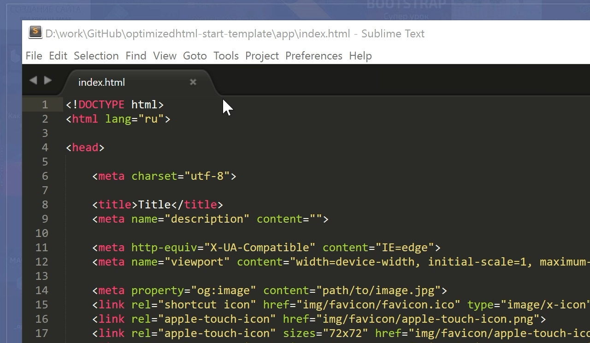
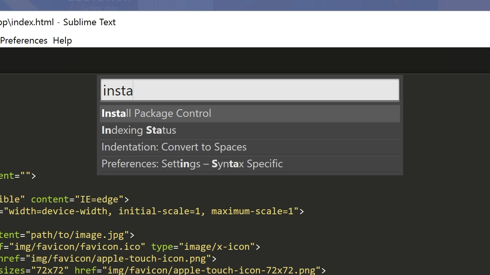
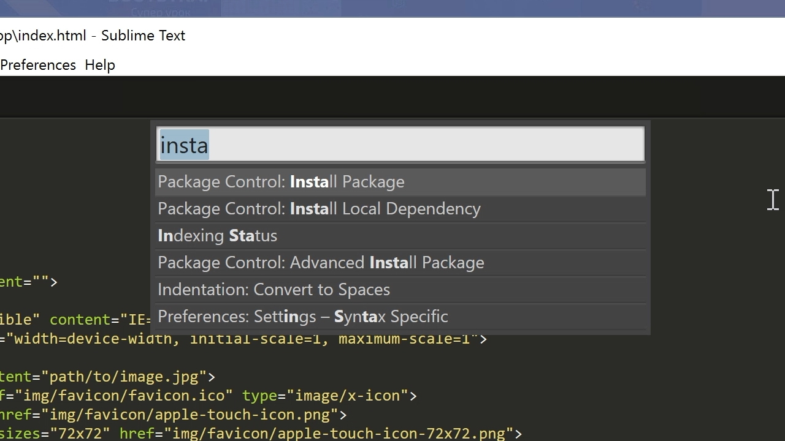
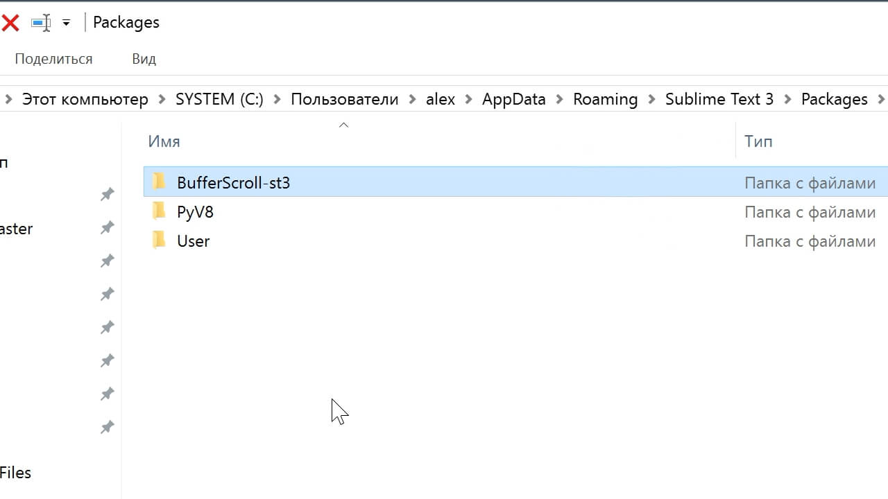
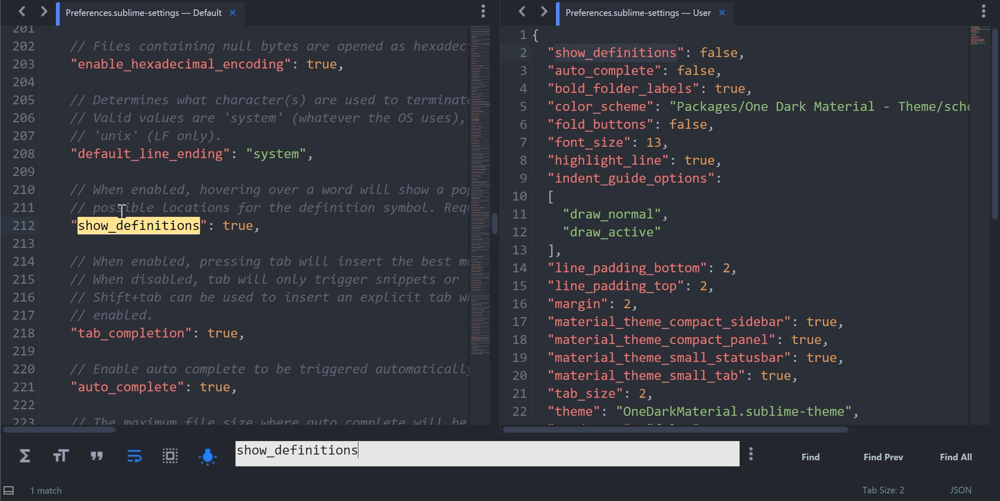

По многочисленным просьбам обновил руководство по быстрой настройке редактора кода Sublime Text, установке необходимых веб-разработки плагинов и создании своего пресета настроек для быстрого старта на новом рабочем месте.

Вам наверняка знакома ситуация, когда на новом рабочем месте необходимо быстро установить и настроить Sublime Text для работы над новыми проектами. Как правило, тонкая настройка Sublime Text занимает много времени и выполнять ее каждый раз не практично и долго.
Сегодня мы рассмотрим максимально быструю настройку Sublime Text, самые популярные среди верстальщиков плагины для ускорения верски и установим одну из лучших и комфортных тем оформления редактора One Dark Material Theme.
По умолчанию Sublime Text выглядит довольно печально:
Установка Package Control в Sublime Text
Для начала необходимо настроить Package Control. Для этого нажимаем хоткей Ctrl+Shift+P. Во всплывающем окне набираем Install Package Control и выбираем соответствующий пунк. Через несколько секунд Package Control будет установлен, о чем вы получите соответствующее уведомление.
Если вы пользователь MacOS, необходимо нажать на клавиатуре Cmd+Shift+P.
Package Control необходим для того, чтобы вы могли устанавливать дополнения и плагины в Sublime Text 3 из репозитория пакетов.
Установка плагинов в Sublime Text
Далее необходимо установить нужные для работы плагины. Мы рассмотрим установку самых популярных среди верстальщиков плагины, которые значительно упрощают разработку. Вы также можете поэкспериментировать с другими плагинами в Package Control, может быть вам понравятся и другие из огромного количества доступных пакетов.
Для установки плагинов в Sublime Text через Package Control необходимо вызвать меню, как мы это делали ранее: Ctrl+Shift+P. Затем вводим команду "Install Package" и выбираем нужный пакет из списка.
Самые популярные плагины для Sublime Text:
- Emmet - ускоряет написание HTML и CSS кода до скорости света. Урок по Emmet
- AutoFileName - дополняет код при написании путей до файлов в верстке;
- Gist - подключает в Sublime Text возможность использовать сервис сниппетов кода GitHub Gist. Урок по Gist;
- Sass - плагин для подсветки Sass синтаксиса в Sass и Scss файлах. Раскрывает Emmet в Sass файлах.
- terminus - плагин встроенного терминала Sublime Text.
- W3CValidators - мощный набор валидаторов для HTML разметки, CSS, SVG и т.д.
Установка внешнего оформления Sublime Text
Мне очень нравится тема оформления One Dark Material Theme и подсветка кода соответствующей цветовой гаммой. Это наиболее сбалансированные, достаточно контрастные, но не слишком резкие цвета для комфортной работы в редакторе.
Дя установки цветового оформления One Dark нам необходимо доустановить следующие пакеты через Package Control:
- One Dark Color Scheme - цветовая схема для подсветки кода;
- One Dark Material - Theme - тема оформления UI Sublime Text.
Установка плагина вручную
Некоторые плагины более не обновляются в Package Control или просто там не фигурируют. Кое-какие из этих плагинов имеют жизненную необходимость при работе с кодом и их приходится устанавливать вручную.
Один из таких плагинов BufferScroll - потрясающий плагин, который при повторном открытии документа устанавливает курсор на том месте, на котором вы закончили редактирование в прошлый раз, тем самым сокращая время на поиск нужной позиции для продолжения работы.
Для установки BufferScroll вручную, скачайте его и распакуйте в любое удобное место на вашем диске. Далее в Sublime Text выбираем пункт меню Preferences > Browse Packeges. Откроется папка пользовательских данных на вашем диске. Скопируйте сюда папку, содержащую файлы Buffer Scroll и перезапуститие Sublime Text. Теперь плагин работает. 
Тонкая настройка редактора, пресет моих настроек
Переходим к настройкам Sublime Text.
Предтавляю мой пресет настроек, который я всегда использую для стартовой настройки редактора Sublime Text на новом рабочем месте или после переустановки системы. Вы можете использовать данный пресет в вашем редакторе и кастомизировать его при необходимости:
// Keymap (Windows Users):
[
{ "keys": ["alt+shift+f"], "command": "reindent" },
]
// Settings:
{
"show_definitions": false,
"auto_complete": false,
"bold_folder_labels": true,
"color_scheme": "Packages/One Dark Material - Theme/schemes/OneDark.tmTheme",
"fold_buttons": false,
"font_size": 13,
"highlight_line": true,
"indent_guide_options":
[
"draw_normal",
"draw_active"
],
"line_padding_bottom": 2,
"line_padding_top": 2,
"margin": 2,
"material_theme_compact_sidebar": true,
"material_theme_compact_panel": true,
"material_theme_small_statusbar": true,
"material_theme_small_tab": true,
"tab_size": 2,
"theme": "OneDarkMaterial.sublime-theme",
"word_wrap": "false",
}
Код пресета для пользовательских настроек (Preferences.sublime-settings | Preferences > Settings) - отдельно:
{
"show_definitions": false,
"auto_complete": false,
"bold_folder_labels": true,
"color_scheme": "Packages/One Dark Material - Theme/schemes/OneDark.tmTheme",
"fold_buttons": false,
"font_size": 13,
"highlight_line": true,
"indent_guide_options":
[
"draw_normal",
"draw_active"
],
"line_padding_bottom": 2,
"line_padding_top": 2,
"margin": 2,
"material_theme_compact_sidebar": true,
"material_theme_compact_panel": true,
"material_theme_small_statusbar": true,
"material_theme_small_tab": true,
"tab_size": 2,
"theme": "OneDarkMaterial.sublime-theme",
"word_wrap": "false",
}
Код пресета для пользовательских клавиатурных сокращений (Default (Windows).sublime-keymap | Preferences > Key Bindings) - отдельно:
[
{ "keys": ["alt+shift+f"], "command": "reindent" },
]
Теперь при выделении и по нажатию Alt+Shift+F ваш код будет автоматически выравниваться отступами с соответствующей иерархией вложенности элементов.
Разместив данные сниппеты в соответствующих файлах настроек вы получите полностью готовый к рабое, настроенный Sublime Text или можете настроить редактор под себя. В настройках есть два поля - левое с дефолтными настройками и правое с пользовательскими. В дефолтных настройках вы можете увидеть подсказки к каждому свойству и применить его в правой части скопировав и установив свое значение.
Узнать какое свойство за что отвечает довольно просто - все свойства имеют интуитивно понятные наименования на английском языке. Любое свойство из большого обилия доступных настроек можно просто перевести на русский язык и понять, что оно означает.
Для того, чтобы сделать бэкап всех ваших настроек и быстро развернуть Sublime Text на другом рабочем месте, достаточно скопировать папку
"C:\Users\{Ваш пользователь}\AppData\Roaming\Sublime Text 3"
в потаенное резервное место на вашем диске или на флешку, а затем разместить у другого юзера или на другом компьютере в этой-же директории под пользователем.
Также дополнительно на ваше усмотрение можно отключить миникарту справа и скрыть меню. Это можно сделать перейдя в меню View > Hide Minimap и View > Hide Menu. Показать меню можно нажатием клавишы Alt на клавиатуре.
Премиум уроки от WebDesign Master


Другие уроки по теме «Инструменты»
- Настройка Parcel для веб-разработки
- Tailwind CSS для начинающих. Подробный урок по подключению, настройке и использованию
- Настройка VS Code для веб-разработки
- Starter - Простой стартер для веб-разработки
- Урок по хостингу от А до Я. Сайты, базы, домены, SSL, SSH, sFTP
- Gulp - Актуальное и исчерпывающее руководство для самых маленьких